Soru 1Cevap: D
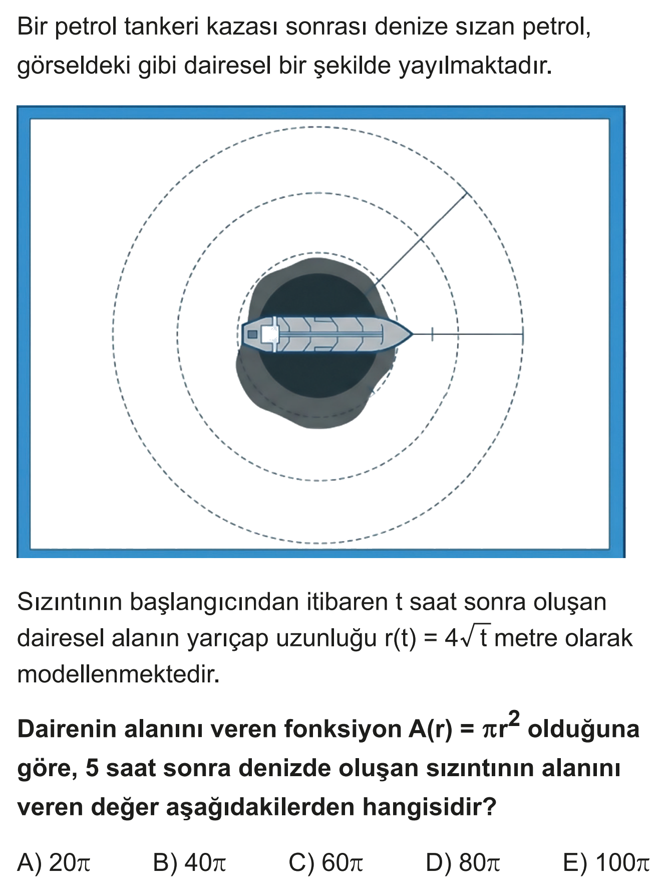
Çözüm
- $(A\circ r)(t)=\pi(4\sqrt t)^2=16\pi t$.
- $t=5$ yazılır.
- $80\pi$ (D).
Cevap: D
Soru 2Cevap: B
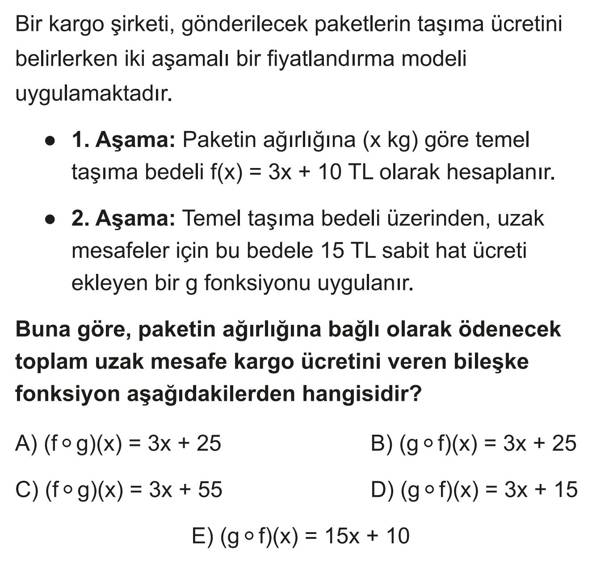
Çözüm
- 1. aşama $f(x)=3x+10$, 2. aşama $g(t)=t+15$.
- Önce $f$, sonra $g$: $(g\circ f)(x)=3x+10+15$.
- $=3x+25$ (B).
Cevap: B
Soru 3Cevap: E
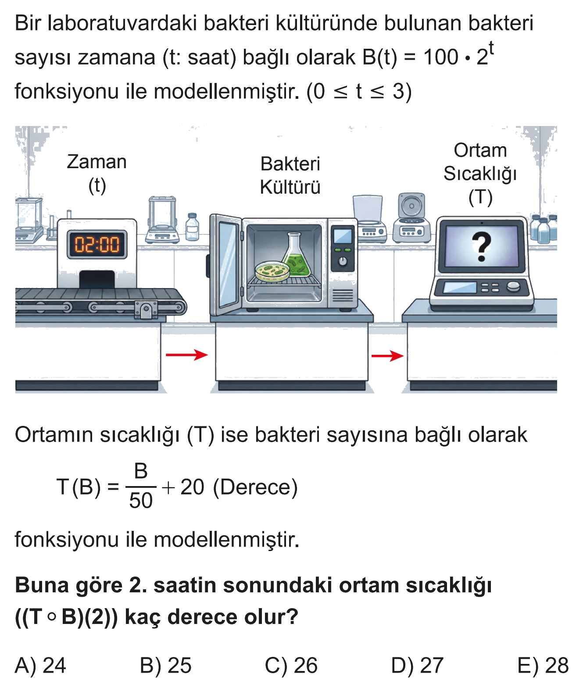
Çözüm
- $B(2)=100\cdot2^2=400$.
- $T(400)=\dfrac{400}{50}+20$.
- $=28$ derece (E).
Cevap: E
Soru 4Cevap: B
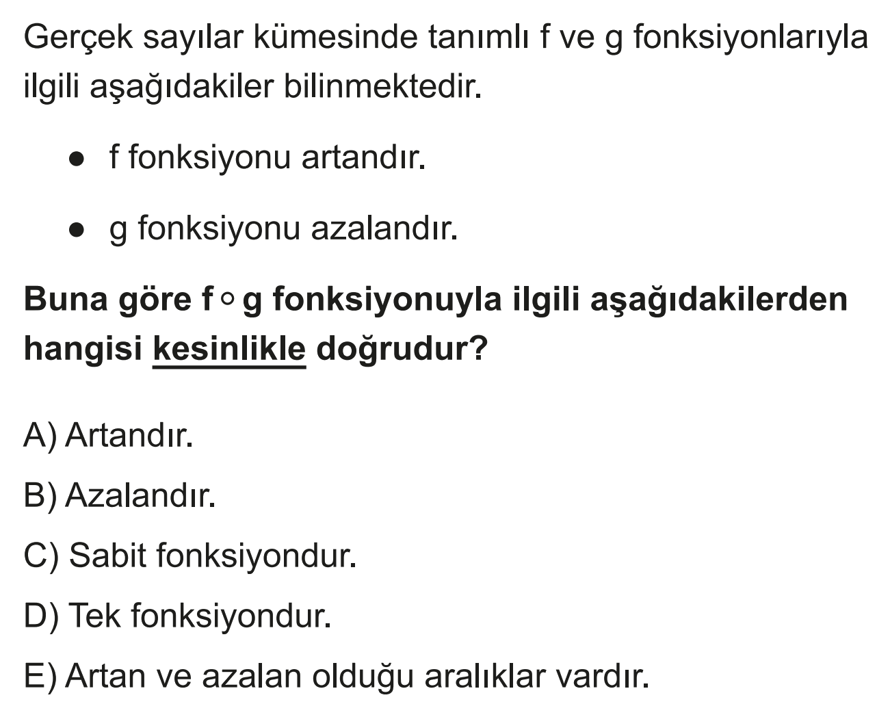
Çözüm
- $f\circ g$'de dıştaki $f$ artan, içteki $g$ azalan.
- Zıt karakterli fonksiyonların bileşkesi azalandır.
- $f\circ g$ azalandır (B).
Cevap: B
Soru 5Cevap: A
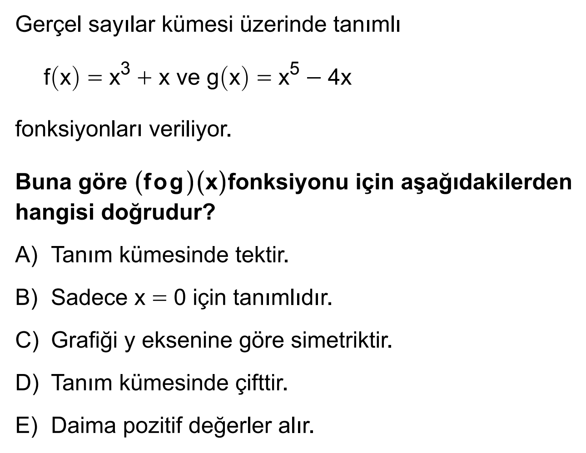
Çözüm
- $f(x)=x^3+x$ ve $g(x)=x^5-4x$ tek fonksiyonlardır.
- İki tek fonksiyonun bileşkesi tektir.
- $f\circ g$ tanım kümesinde tektir (A).
Cevap: A
Soru 6Cevap: C
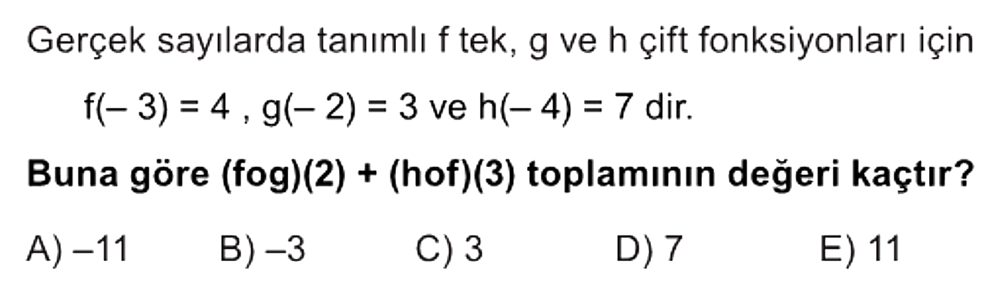
Çözüm
- $g$ çift: $g(2)=g(-2)=3$; $f$ tek: $f(3)=-f(-3)=-4$. $(f\circ g)(2)=-4$.
- $h$ çift: $(h\circ f)(3)=h(-4)=7$.
- Toplam $3$ (C).
Cevap: C
Soru 7Cevap: B
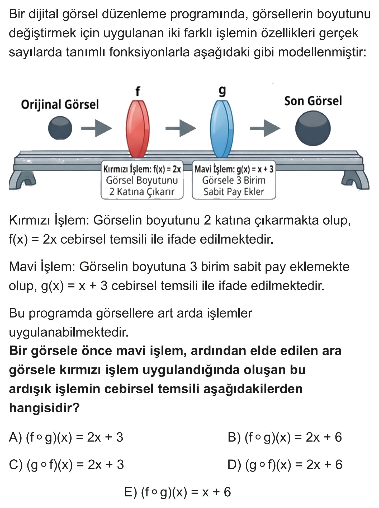
Çözüm
- Önce mavi işlem $g$, ardından kırmızı işlem $f$ uygulanır.
- İçteki fonksiyon $g$ olduğundan $(f\circ g)(x)=f(x+3)$.
- $=2(x+3)=2x+6$ (B).
Cevap: B
Soru 8Cevap: B
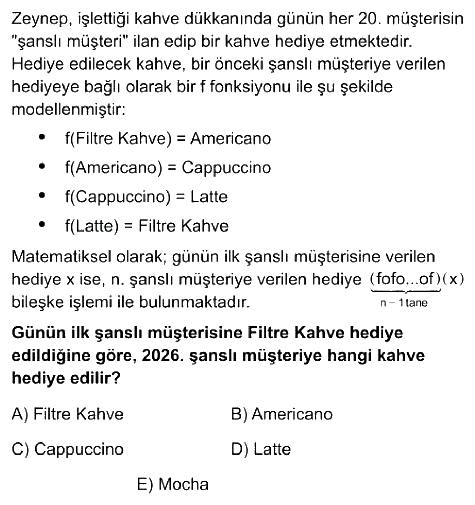
Çözüm
- Hediyeler $4$ adımda bir tekrar eder: Filtre → Americano → Cappuccino → Latte → Filtre.
- $2026$. müşteri için $2025$ adım ilerlenir; $2025=4\cdot506+1$.
- $1$ adım sonrası Americano (B).
Cevap: B
Soru 9Cevap: B
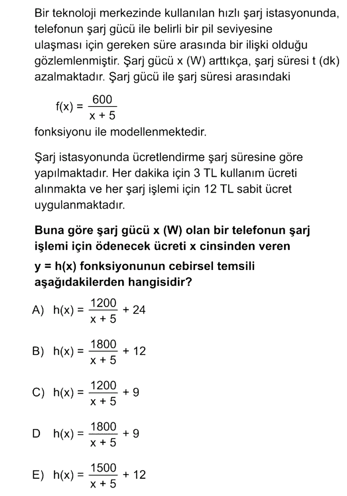
Çözüm
- Şarj süresi $f(x)=\dfrac{600}{x+5}$; ücret $g(t)=3t+12$.
- $h(x)=g(f(x))=3\cdot\dfrac{600}{x+5}+12$.
- $=\dfrac{1800}{x+5}+12$ (B).
Cevap: B
Soru 10Cevap: C
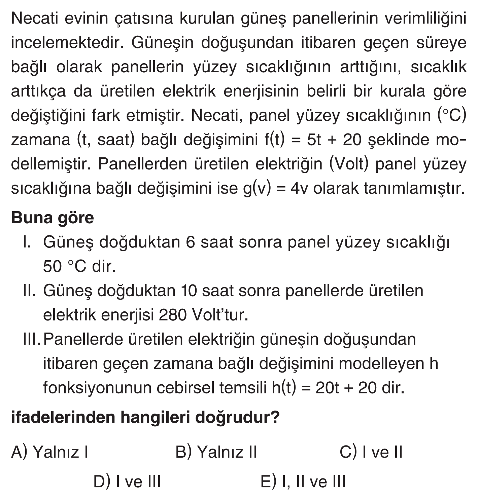
Çözüm
- $f(6)=5\cdot6+20=50$: I doğru.
- $f(10)=70$, $g(70)=280$: II doğru.
- $h(t)=g(f(t))=4(5t+20)=20t+80$: III yanlış. Cevap I ve II (C).
Cevap: C
Soru 11Cevap: E
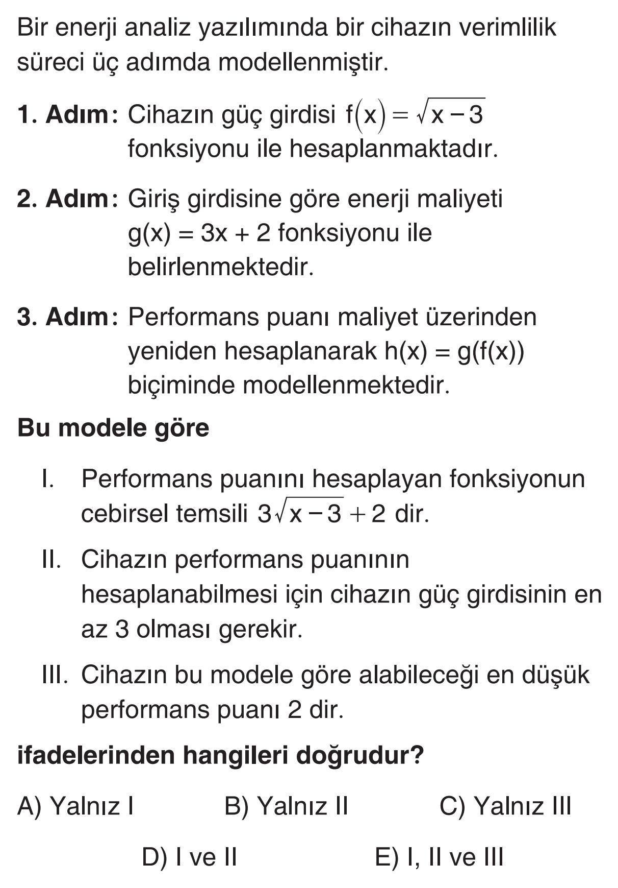
Çözüm
- $h(x)=g(f(x))=3\sqrt{x-3}+2$: I doğru.
- Kök için $x\ge3$: II doğru.
- $\sqrt{x-3}\ge0$ olduğundan en düşük puan $2$: III doğru (E).
Cevap: E
Soru 12Cevap: C
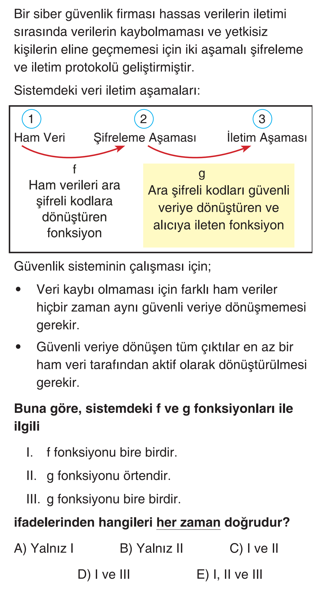
Çözüm
- Farklı ham veriler aynı şifreye dönüşmemeli: $f$ bire birdir (I).
- Her güvenli çıktı en az bir veriden gelmeli: $g$ örtendir (II).
- $g$'nin bire birliği kesin değildir. Cevap I ve II (C).
Cevap: C
Soru 13Cevap: D
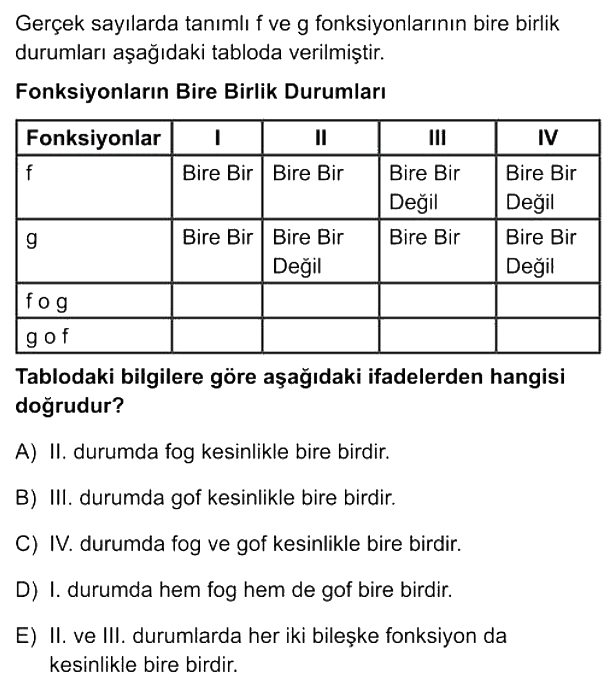
Çözüm
- I. durumda $f$ ve $g$ bire bir: $f\circ g$ ve $g\circ f$ bire birdir.
- İç fonksiyon bire bir değilse bileşke bire bir olamaz; dış fonksiyon bire bir değilse kesin bir şey söylenemez.
- Doğru ifade D.
Cevap: D
Soru 14Cevap: A
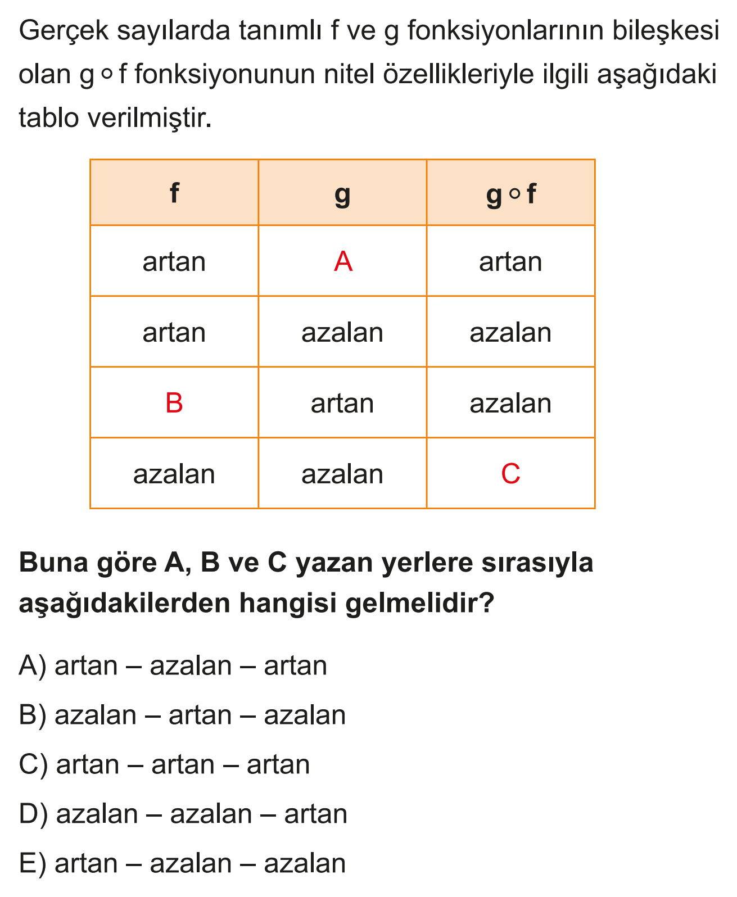
Çözüm
- Artan∘? = artan: dış fonksiyon $g$ artan olmalı, $A$ = artan.
- $B\circ$ … : $g$ artan iken $g\circ f$ azalan ise $f$ azalan; $B$ = azalan.
- Azalan∘azalan artandır: $C$ = artan. Sıra artan–azalan–artan (A).
Cevap: A
Soru 15Cevap: D
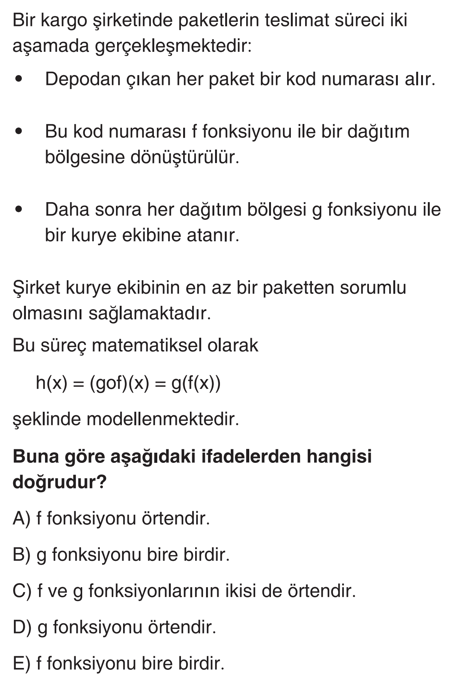
Çözüm
- $g$: dağıtım bölgesi → kurye ekibi.
- Her ekip en az bir paketten sorumlu: her ekip $g$ ile bir bölgeden eşlenir.
- $g$ örtendir (D).
Cevap: D
Soru 16Cevap: C
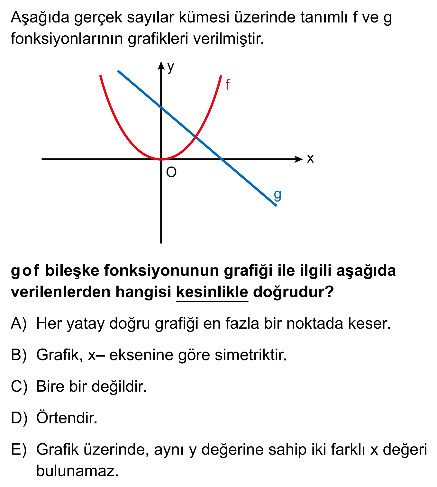
Çözüm
- $f(x)=x^2$ biçiminde (orijinde tepe), $g$ orijinden geçen azalan doğru: $g(x)=-kx$.
- $(g\circ f)(x)=-kx^2$: $x$ ve $-x$ aynı değeri verir.
- $g\circ f$ bire bir değildir (C).
Cevap: C
Soru 17Cevap: D
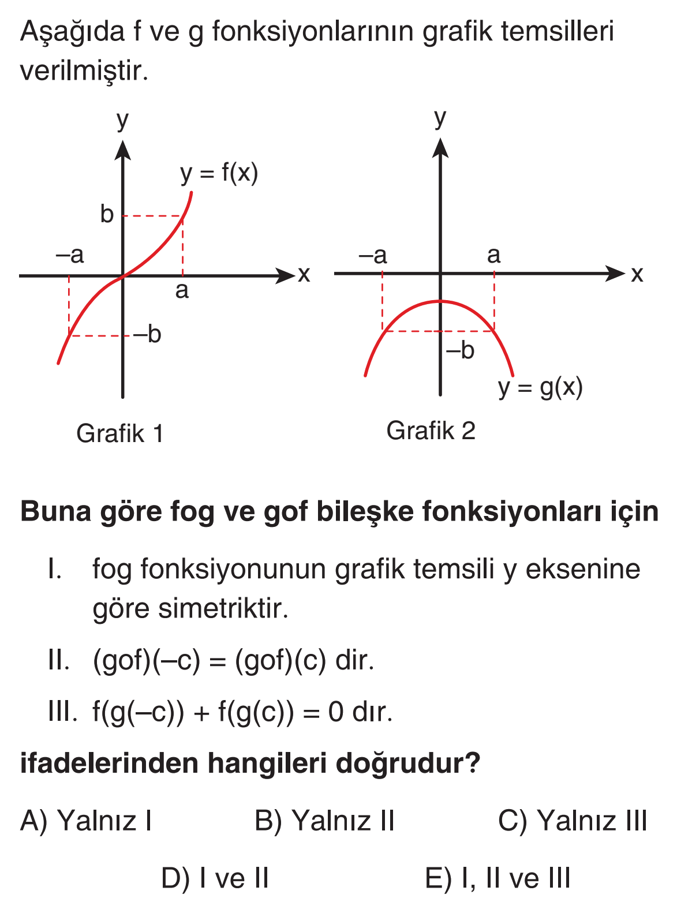
Çözüm
- Grafik 1: $f$ orijine göre simetrik (tek); Grafik 2: $g$ $y$ eksenine göre simetrik (çift).
- $f\circ g$ çift (I doğru); $g(f(-c))=g(-f(c))=g(f(c))$ (II doğru).
- $f(g(-c))+f(g(c))=2f(g(c))$, genelde $0$ değil (III yanlış). I ve II (D).
Cevap: D
Soru 18Cevap: D
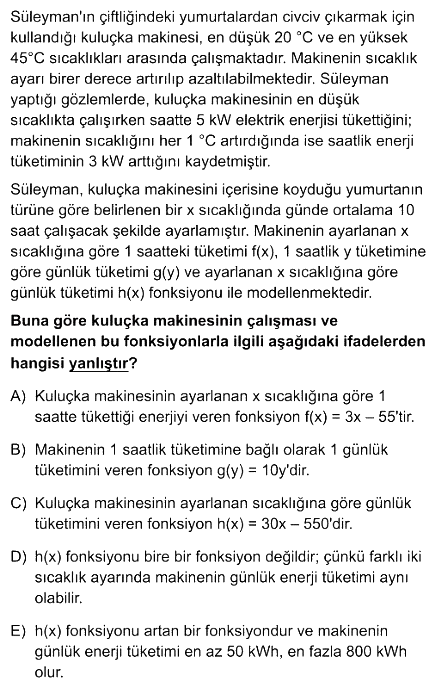
Çözüm
- $f(x)=5+3(x-20)=3x-55$, $g(y)=10y$, $h(x)=30x-550$: A, B, C doğru.
- $h$ doğrusal ve artandır, dolayısıyla bire birdir: D yanlıştır.
- $h(20)=50$, $h(45)=800$: E doğru. Cevap D.
Cevap: D
Soru 19Cevap: E
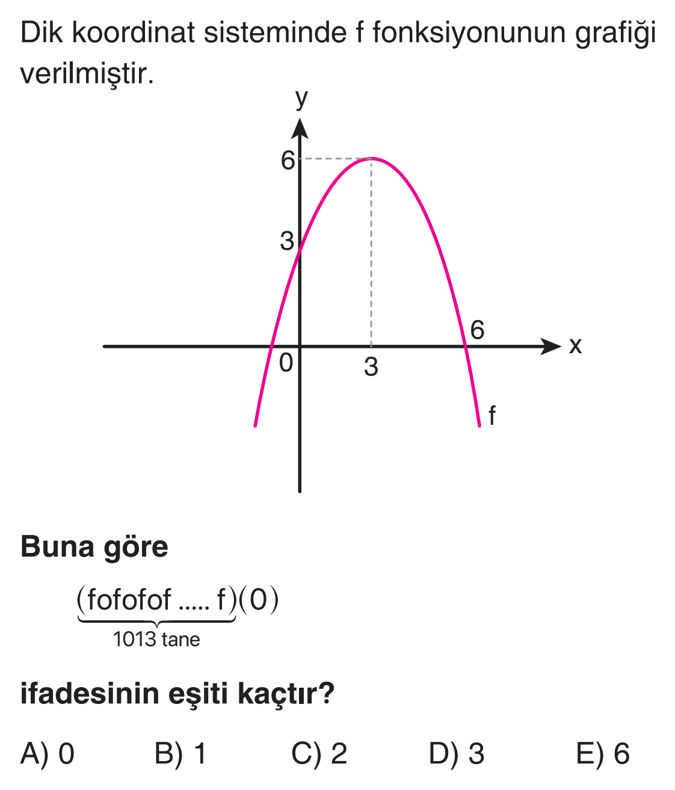
Çözüm
- Grafikten $f(0)=3$, $f(3)=6$, $f(6)=0$: değerler $0\to3\to6\to0$ döngüsüyle tekrarlar.
- Döngü uzunluğu $3$; $1013=3\cdot337+2$.
- $2$ adım sonra $6$'ya ulaşılır: sonuç $6$ (E).
Cevap: E
Soru 20Cevap: B
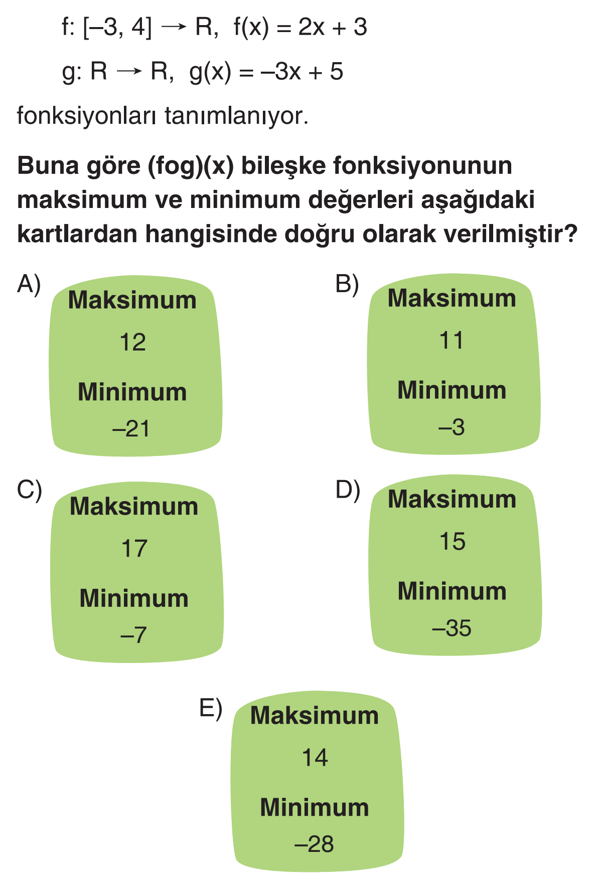
Çözüm
- $f\circ g$ için $-3\le g(x)\le4\Rightarrow-3\le-3x+5\le4\Rightarrow\dfrac13\le x\le\dfrac83$.
- $(f\circ g)(x)=2(-3x+5)+3=-6x+13$, azalan.
- Maksimum $f(4)=11$, minimum $f(-3)=-3$ (B).
Cevap: B